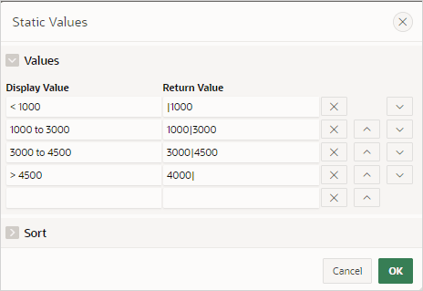
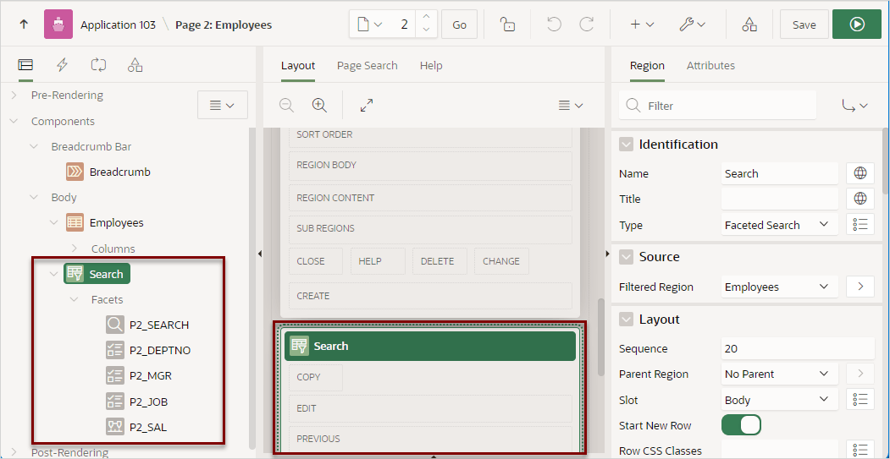
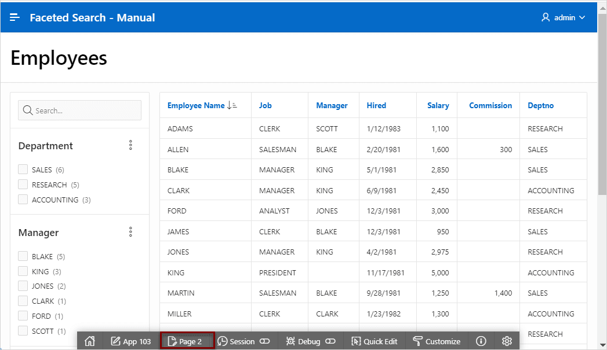

8.7.5 Creating a Faceted Search Manually
Create a faceted search page by manually adding the page and facet components.
Using the Create Application Wizard or Create Page Wizard is the easiest way to create a faceted search page. However, you can create a faceted search page manually. At a minimum, creating a faceted search page manually involves the following steps:
-
Create a classic report or cards region.
-
Add a faceted search region.
-
Add individual facets or facet groups to the search region.
-
Add a reset button.
The following example creates a faceted search page which contains a
classic report built on the EMP table. The EMP
table is available in the sample dataset, EMP / DEPT.
To create a faceted search manually.
- Run the Create Application Wizard:
- On the Workspace home page, click the App Builder icon.
- Click Create.
The wizard prompts you to select a method of creating an application.
- Click Use Create App Wizard.
- On Create an Application:
- Set Icon - Click Set Icon to select an application icon. The icon you select is used as the Favicon, the PWA icon, the Apple touch icon, and the App Builder icon.
- Name - Enter a name to identify the application. For example, enter
Faceted Search - Manual - Appearance - Accept the default Theme Style and menu layout (Vita, Side Menu). To change it, click the Set Appearance icon adjacent to the Appearance field.
- Under Pages, click Add Page. Expand Additional Pages at the bottom of the window and select Classic Report.
- On Add Report Page:
-
Page Name - Enter a name for this page. For example, enter
Employees -
Set Icon - Accept the default, or select an icon to display in the navigation menu for this page.
-
Table or View - Select a table or view on which to build the page. Select EMP.
-
Click Add Page.
-
- Click Create Application.The Application home page appears.
- View the new page.
- On the Application home page, select the new page, 2 -
Employees.The page displays in Page Designer.
- Click Save and Run Page on the right side of the Page Designer toolbar.
- When prompted, enter your workspace username and password and click
Sign In.
The Employees report appears.
- Return to Page Designer. Click Page X on the Runtime Developer toolbar where X is the page number.
- On the Application home page, select the new page, 2 -
Employees.
- Add a search region:
- In the Rendering tab (or left pane), right-click Components and select Create Region.
- Select the new region. Edit the following Region attributes in the
Property Editor (or right pane):
- Identification, Name - Enter
Search - Identification, Type - Select Faceted Search.
- Source, Filtered Region - Select Employees.
- Identification, Name - Enter
- Update the region appearance:
-
Appearance, Template Options - Click Use Template Defaults, Scroll - Default.
The Template Options dialog appears.
-
Common, General - Select Remove Body Padding.
-
Common, Header - Select Hidden but accessible.
-
Click OK.
-
- Update the facet for searching multiple columns:
- Select
PX_SEARCHwhereXrepresents the page number. - Source, Database Column(s) - Enter
ENAME,JOB,MGR,DEPTNO - Save your changes. Click Save.
- Select
- Add a facet to filter the
DEPTNOcolumn:- In the Rendering tab, right-click Facets and select Create Facet.
- Select the new facet and edit the following attributes in the Property
Editor:
-
Identification, Name - Enter
PX_DEPTNOwhereXrepresents the page number. -
Identification, Type - Accept the default, Checkbox Group.
-
Label, Label - Enter
Department -
List of Values, Type - Select SQL Query.
-
List of Values, SQL Query - Enter
SELECT dname, deptno FROM dept
-
- Save your changes. Click Save.
- Add a facet to filter the
MGRcolumn:- In the Rendering tab, right-click Facets and select Create Facet.
- Select the new facet and edit the following attributes in the Property
Editor:
-
Identification, Name - Enter
PX_MGRwhereXrepresents the page number. -
Identification, Type - Accept the default, Checkbox Group.
-
Source, Database Column - Verify that the column is MGR.
-
Label, Label - Enter
Manager -
List of Values, Type - Select Shared Component.
The Create Application Wizard created a lookup list of values named
EMP.ENAMEso that theMGRcolumn displays the manager name instead of the employee number. -
List of Values, List of Values - Select EMP.ENAME.
-
- Save your changes. Click Save.
- Add a facet to filter the
JOBcolumn:- In the Rendering tab, right-click Facets and select Create Facet.
- Select the new facet and edit the following attributes in the Property
Editor:
-
Identification, Name - Enter
PX_JOBwhereXrepresents the page number. -
Identification, Type - Accept the default Checkbox Group.
-
Source, Database Column - Verify that the column is JOB.
-
Label, Label - Enter
Job -
List of Values, Type - Select Distinct Values.
-
- Save your changes. Click Save.
- Add a facet to filter the
SALcolumn:- In the Rendering tab, right-click Facets and select Create Facet.
- Select the new facet and edit the following attributes in the Property
Editor:
-
Identification, Name - Enter
PX_SALwhereXrepresents the page number. -
Identification, Type - Select Range.
-
Label, Label - Enter
Salary -
Source, Database Column - Verify that the column is SAL.
-
Source, Data Type - Select NUMBER.
-
Settings, Select Multiple - Enable Select Multiple.
-
- Define the facet as a static list of values:
-
List of Values, Type - Select Static Values.
-
List of Values, Static Value - Click Display1, Display2.
In the Static Values dialog, define the following:
-
Row 1:
Display Value - Enter
< 1000Return Value - Enter
|1000 -
Row 2:
Display Value - Enter
1000 to 3000Return Value - Enter
1000|3000 -
Row 3:
Display Value - Enter
3000 to 4500Return Value - Enter
3000|4500 -
Row 4:
Display Value - Enter
> 4500Return Value - Enter
4000|

Description of the illustration static_list_of_values.png -
-
Click OK to save your changes.
-
- Save your changes. Click Save.
Notice that the Search region displays below the Employees region.

Description of the illustration region_position.pngNext, move the Employees report so it displays adjacent to the Search region.
Tip:
The procedure that follows explains how to reposition a region by editing Region attributes. You can also move components by selecting them in the Layout tab (central pane) and dragging and dropping them to a new position.
- Select the Employees region and update the following
Region attributes:
- Layout, Sequence - Enter
20 - Start New Row - Disable this option.
In the Layout tab, notice the Search and Employees regions now display adjacent to one another. - Layout, Sequence - Enter
- Make the Search region narrower and then update region appearance. Select the
Search region and update the following Region
attributes:
- Layout, Column - Enter
1 - Layout, Column Span - Select 3.
- Save your changes. Click Save.
- Layout, Column - Enter
- View the page.
- Click Save and Run Page in the upper right corner.
- If prompted, enter your workspace username and password and click
Sign In.
The revised page appears. Notice that the Search region contains the following facets: Search, Department, Manager, and Salary.

Description of the illustration faceted_search_manual_1.png - Return to Page Designer. Click Page X on the Runtime Developer toolbar.
Next, add a button to refresh the page. - Add a region to contain a reset button:
- In the Rendering tab, right-click Body and select Create Region.
- Select the new region. In the Property Editor under
Region, edit the following attributes:
-
Identification, Name - Enter
Button Bar -
Identification, Type - Accept the default Static Content.
-
Layout, Sequence - Enter
10
-
- Update the Appearance attributes:
-
Appearance, Template - Select Buttons Container.
-
Appearance, Template Options - Click Use Template Defaults.
The Template Options dialog appears.
-
Common, Body Padding - Select No Padding.
-
Common, Style - Select Remove UI Decoration.
-
Click OK.
-
- Add a button:
- In the Rendering tab, right-click the Button Bar region and select Create Button.
- Edit the button. Select the button and edit the following attributes in
the Property Editor:
-
Identification, Button Name - Enter
RESET -
Layout, Slot - Select Next.
-
- Update the Appearance attributes:
-
Appearance, Button Template - Select Text with Icon.
-
Appearance, Template Options - Click Use Template Defaults, Left.
In the Template Options dialog:
-
Common, Style - Select Remove UI Decoration.
-
Click OK.
-
-
Appearance, Icon - Click List of Values - Icon and find and select fa-undo.
-
- Update the Behavior attributes:
-
Behavior, Action - Select Redirect to Page in this Application.
-
Behavior, Target - Click No Link Defined.
In the Link Builder - Target dialog:
-
Target, Page - Select the current page. For example, select 2.
-
Clear/Reset, Clear Cache - Select the current page. For example, select 2.
-
Clear/Reset, Action - Select Reset Regions.
-
Click OK.
-
-
- Save your changes. Click Save.
- View the revised page.
- Click Save and Run Page.
- If prompted, enter your workspace username and password and click
Sign In.
The faceted search page appears. Notice the new Reset button displays in the upper right above the report.
- Test the page. Select facets and then click Reset.
Parent topic: Managing Faceted Search